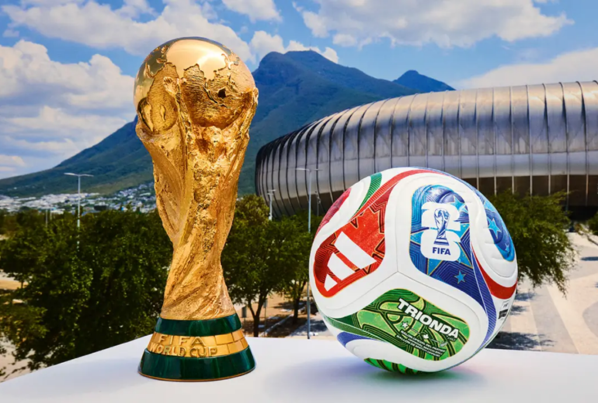

A Copa do Mundo FIFA de 2026 será a 23ª edição do principal torneio de futebol entre seleções nacionais. Pela primeira vez, a competição será realizada em conjunto por três países da América do Norte:

A escolha dos anfitriões ocorreu em 2018, durante o Congresso da FIFA, quando a candidatura conjunta dos três países foi aprovada. O processo de seleção havia sido adiado devido a investigações relacionadas a casos de corrupção envolvendo edições anteriores do torneio.Outra novidade será o aumento do número de participantes, que passará de 32 para 48 seleções. Além disso, será a primeira vez que o Canadá receberá partidas da Copa do Mundo. Os Estados Unidos já sediaram a competição em 1994, enquanto o México foi anfitrião em 1970 e 1986, tornando-se o primeiro país a receber o torneio pela terceira vez.
O Conselho da FIFAdecidiu em 30 de maio de 2015 que qualquer país poderia concorrer ao processo de escolha da sede, desde que sua confederação não tenha o país que sediou a edição anterior (atualmente as duas anteriores). Por isso, apenas os membros da Confederação Asiática de Futebol (AFC) não puderam concorrer, já que a edição de 2022 ocorreu no Catar. Em outubro de 2016, o Conselho da FIFA aprovou o critério geral de aprovação, instaurando que membros associados às confederações que tenham países que sediaram as duas últimas copas ficaram inelegíveis ao processo de escolha desta edição, sendo assim, além da (AFC), membros da União das Federações Europeias de Futebol (UEFA) também não poderiam se candidatar, devido a realização da edição de 2018 na Rússia. Porém, caso nenhuma proposta atingisse os níveis de satisfação exigidos pela federação, seriam aceitas propostas da federação que sediou a penúltima edição (UEFA) e, caso ainda não fossem atingidos os níveis de satisfação, seriam aceitas propostas da federação que sediou a última edição (AFC).As candidaturas múltiplas também foram permitidas, mas foram avaliadas caso a caso. A secretaria-geral da FIFA, Fatma Samoura, teria o poder de excluir os candidatos que não satisfaçam os requisitos técnicos mínimos para sediar a competição.
A música da Shakira para a Copa do Mundo FIFA 2026 se chama "Dai Dai", feita em parceria com Burna Boy. Ela foi anunciada pela FIFA como a música oficial do torneio.Dai Dai - Official FIFA World Cup 2026 Song
"Dai Dai" reúne ritmos latinos, africanos e pop em uma celebração da paixão pelo futebol, da diversidade cultural e da união entre os povos. A música foi criada para representar o espírito global da Copa do Mundo FIFA 2026, sediada por Canadá, Estados Unidos e México. Parte da arrecadação da faixa será destinada ao Fundo Global de Educação da FIFA.
Assista o clipe oficial ao clicar na imagem abaixo